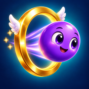
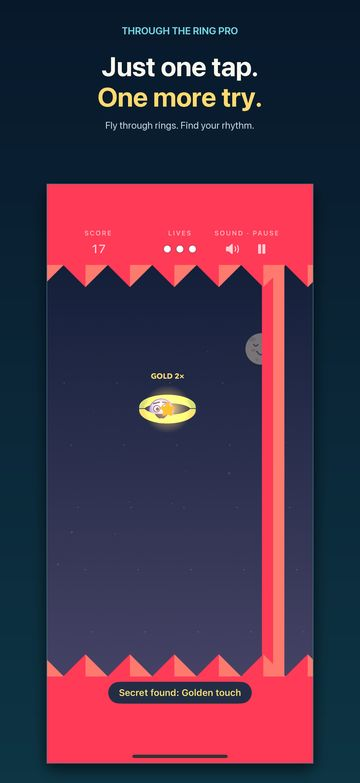
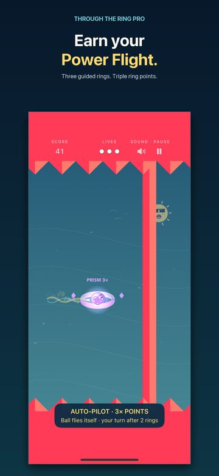
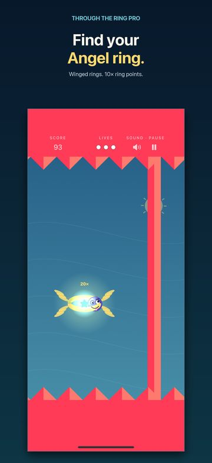

Through the Ring PRO: Arcade

Through the Ring PRO is a free-to-try one-tap arcade game for iPhone and iPad with no ads, no subscription and no internet needed. You get 3 free runs, and one optional one-time purchase, Unlock the Full Game ($2.99 in the US), gives you unlimited runs. You tap to make a ball jump through rings, each ring you pass opens the wall behind it, and you chase a higher score, on a plane or anywhere else.
Free to try · One-time unlock · No ads · No subscription · Works offline · iOS 17 or later



Key Facts
| Price | Free download. Free to try: 3 free runs, at most one per day (a day you skip does not use one up). Practice is always free. |
|---|---|
| In-app purchases | One, optional and one-time: Unlock the Full Game, $2.99 in the US App Store (prices vary by country), for unlimited runs. Family Sharing is on. No subscriptions, no coins, nothing else for sale. |
| Bought it before? | Everything stays unlocked. Restore purchase is in Settings → Full Game. |
| Ads | None. |
| Internet | Not needed to play. Works in airplane mode. Game Center leaderboards and challenges are optional and need a connection. |
| Data collected | None by the developer: no accounts, analytics or tracking. The app's privacy manifest declares no collected data and no tracking. Optional Game Center scores are held by Apple. See the privacy page. |
| Devices | iPhone and iPad with iOS 17 or later, in portrait. iPhone Duo on either display. |
| Game Center | Optional. Today's leaderboard (resets once a day) and an all-time leaderboard. |
| Languages | English, Spanish, French, German, Japanese, Korean, Portuguese (Brazil), Italian, Traditional Chinese. |
| Players | One player. No real-time multiplayer, no chat. |
| Accessibility | VoiceOver labels on menu controls, Reduce Motion support, a light outline option, Slow mode, and separate music, sound and vibration controls. It is a timing game, so it is not fully accessible to everyone. |
| Current version | 2.2 (October 23, 2026), which made the game a free download with 3 free runs and one optional unlock. The original game came out in 2017; version 2.0 rebuilt it from scratch. |
| Made by | Chirag Mirani, an independent developer. |
How to Play
- Tap anywhere and the ball jumps. Let go and gravity brings it back down.
- Fly through the ring. Each ring you pass opens the wall just behind it. Miss the ring and the wall stays shut.
- Watch your lives. You start with three. A closed wall, the floor spikes and the ceiling spikes each cost one.
- Aim for the center. Center passes score more, and a perfect streak multiplies your points.
- Beat your best. The course never ends, and it starts slow, then picks up as you score.
Ways to Play
Play
The main game. Every normal Play run counts on today's leaderboard and the all-time leaderboard if you use Game Center, and the game shows your place after each run. The old separate Daily Ring mode is now part of Play.
Slow mode
A switch in Settings that makes the game 20 percent slower. It keeps its own best score and still unlocks ball colors, but it is not scored online.
Practice
Unlimited retries for learning the timing. Practice runs earn no progress and are not scored online.
Save and continue
If a call or a message interrupts you, your run is saved and you can continue it later.
What Makes a Run Interesting
- Special rings: gold rings are worth 2x, prism rings 3x, and rare winged Angel rings 10x.
- Power Flight: a bullseye can launch three rings of automatic flight at triple points. Then you take back control for the Double Angel ring, worth 20x.
- Life Rings at every 25th ring give back a lost life.
- Ten hidden secrets unlock new ball characters, and the sky changes as you climb.
- Share your score as a picture. Sharing also gives you one extra life on your runs that day.
Why No Ads and No Subscription
Through the Ring PRO is free to download and try, and one optional purchase unlocks the full game for good. That is the only thing for sale: no coins, no extra lives, no subscription. Lives, Power Flight, secrets and ball colors are all earned by playing, so there is no reason for the game to nag you or show you an ad between runs.
It also keeps the game simple to trust. With no ads there is no ad network inside the game, and the developer does not run any servers for it at all. The one purchase goes through Apple's standard App Store sheet, so Screen Time or Ask to Buy can block it on a child's device.
The honest trade-off: after 3 free runs, unlimited play costs a one-time $2.99 in the US.
Is It the Right Game for You?
It fits if you want
- A game with no ads, no subscription and one clear, one-time price if you keep playing.
- Something to play offline: on a plane, on the subway, with no signal.
- Short runs you can start in a second, one thumb, one tap.
- A timing and reflex challenge with a score to beat, and a daily leaderboard if you like competing.
Look elsewhere if you want
- A game that is free forever. After 3 free runs, unlimited play needs the one-time $2.99 (US) unlock.
- A story, levels to complete, or deep strategy. This is an endless arcade game.
- Real-time multiplayer or chat.
- Landscape play, Android, Mac or a game controller. It is iPhone and iPad, portrait, touch only.
- A scientific reaction-time test. The game trains timing but does not measure your reaction time in milliseconds.
New in Version 2.2
Through the Ring PRO is now free to download. Everyone gets 3 free runs, at most one per day, and a day you skip does not use one up. Practice is always free. One optional one-time purchase, Unlock the Full Game ($2.99 in the US, prices vary by country), gives unlimited runs and works with Family Sharing. Still no ads, no subscription, no tracking and no account, and it still plays offline. If you bought the game before, everything stays unlocked; Restore purchase is in Settings → Full Game.
Challenge a Friend
Challenge a friend works with anyone (since version 2.1.3). After a normal Play run, tap Challenge a friend on the game-over card. It opens the share sheet with your score card, a line like “I scored 1,240 on Through the Ring. Can you beat it?” and the App Store link, so you can send it by Messages, WhatsApp or anywhere. Your friend does not need Game Center. On iOS 26 you can also start a Game Center challenge, Beat My Best Run, from Apple’s Games app. It does not appear after Slow mode or Practice runs.
Questions People Ask
Does Through the Ring PRO have ads, a subscription or in-app purchases?
There are no ads and no subscriptions. The download is free and includes 3 free runs. There is one optional in-app purchase, Unlock the Full Game: a one-time $2.99 in the US (prices vary by country) for unlimited runs, shared with your family through Family Sharing.
Does it work offline, in airplane mode, or without Wi-Fi?
Yes. The game needs no internet connection to play, so it works in airplane mode and with no Wi-Fi or cellular data. Only the optional Game Center leaderboards and challenges need a connection.
How do you play?
Tap anywhere and the ball jumps; let go and gravity pulls it down. Fly through each ring to open the wall behind it. Hitting a closed wall or the spikes on the floor or ceiling costs one of your three lives.
Is there a free version or a free trial?
Yes. Through the Ring PRO is a free download, and the free version includes 3 free runs and Practice, which is always free. To keep playing without limits, buy Unlock the Full Game once.
How many free runs do I get?
Three, at most one per day. A day you skip does not use one up, so you can spread them out. Practice is always free; Slow mode runs count as free runs. After your free runs, the one-time Unlock the Full Game purchase ($2.99 in the US, prices vary by country) gives you unlimited runs.
I bought Through the Ring PRO before. Do I have to pay again?
No. If you bought the game before it became free, everything stays unlocked and you do not pay again. If it ever shows as locked, for example on a new device, open Settings → Full Game, in the game and tap Restore purchase.
What devices does it run on?
iPhone and iPad with iOS 17 or later, played in portrait. On iPhone Duo you can play on either display.
Does it need an account or collect my data?
No account is needed. The game has no analytics, no ads and no tracking, and its developer receives nothing about you. If you choose to use Game Center, Apple keeps your leaderboard scores.
What is the daily leaderboard?
Every normal Play run counts on two Game Center leaderboards: today's board, which resets once a day, and the all-time board. After each run the game shows your place, for example “You're #4 of 11 today.”
Is it good for kids?
It has no ads, no subscription, no chat and no account, which is why many parents look for games like it. Its one optional purchase, the full-game unlock, uses the standard App Store sheet, so Screen Time or Ask to Buy can block it. It is a timing game, so very young children may find it hard; Slow mode and Practice make it gentler.
What languages is it in?
Nine: English, Spanish, French, German, Japanese, Korean, Portuguese (Brazil), Italian and Traditional Chinese. It follows your device language.
Can I play against friends?
Not in real time. You can compare scores on Game Center leaderboards, and after a normal Play run the Challenge a friend button sends your score card and the App Store link by message, so any friend can try to beat your score. No Game Center needed.
Will my scores move to a new iPhone?
Your in-game best score is saved on the device you play on, so a new phone starts at zero. Scores you posted to Game Center stay with your Game Center account.
Guides
- iPhone games with no ads and no subscription: how to check, and an honest example
- Offline iPhone games with no Wi-Fi and no ads, for flights and commutes
- A one-tap timing game for reflexes: what it trains, and what it does not
Need help? Visit the support page or read the privacy page.